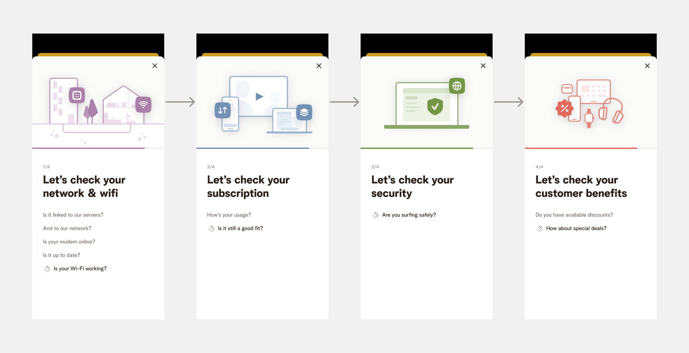

Introduction
In the public eye, Telenet had very low confidence and a bad reputation. Net Promoter Scores were low and churn rate were as high as ever. It was evident that we needed to regain the customer’s trust. Check & Smile was intended to do exactly that, by providing a human-centred feature that would suggest plans and options based on a personalised propensity model. Even if it meant suggesting downgrading to lower tier because a customer is paying too much for their personal usage.
The challenge
We faced two key challenges: defining concrete success metrics for the abstract goal of "regaining trust," and developing an effective solution within tight time constraints.
Responsibilities
- UX & UI Design
- Prototyping & Testing
- Stakeholder Management
- Visual Design & Art Direction
Impact
- Over 255.000 users ran the check in 3 months, of which approx 47.000 took action on their subscription.
- Customer migrations from WiGo to One (NL) increased by 15%.
- Hardware sales increased significantly. In the first three months, 6,400 customers purchased smartphones, tablets, or accessories through Telenet's hardware shop.
- 4.5% increase in engagement
- 8.4% higher NPS
- 3.2% lower churn rate
Discovering and defining the problem
We kicked off this initiative by running user interviews and stakeholder workshops to get a general sense of:
- What would customers need in order to trust Telenet again?
- What are the commercial opportunities vs. what commercial sacrifices is the business willing to make to regain trust?
User pain points
- Lack of agency over their subscriptions. Making the right decision when choosing a plan felt difficult, and changing their subscription felt overwhelming and obscure due to a lack of tangible information and guidance.
- “Am I getting my money’s worth?” is what a lot of customers said or hinted at, echoing the general sentiment that Telenet is too pricy.
- Many users expressed dissatisfaction with the "quality of Telenet internet," reporting connectivity issues. They felt frustrated by not knowing how to resolve these problems, and hour long wait times on the phone.
Business opportunities
- Lower churn by regaining confidence and trust
- Migrate customers still on legacy products to the latest products
- Cross-sell hardware product by raising awareness of advantages only available to customers
The solution
From our research, it was apparent that we needed to focus our attention on four aspects:
- Home network: surfacing optimisation opportunities if we notice symptoms of a poor network. If from our side, nothing is wrong, we still wanted to lead the customer to a troubleshooting flow.
- Product: recommendations based on personal usage. Examples: upgrading to a higher plan because a user keeps reaching their data limit. Or discontinuing a streaming subscription if it's barely used.
- Network security: raise awareness around included options for network security.
- Customer benefits: a lot of customers are not aware that they're elligible to hardware discunts simply by being Telenet customers.
We shaped these as the four different pillars of the check.
Prototyping & Testing
Once we had a good understanding of the problem and how to tackle it, we started shaping the wireframes to validate feasibility and shape the back-end modelling. We also built low-fidelity prototypes to test usability:
User feedback was overwhelmingly positive. Participants particularly valued the feature's transparency, proactive suggestions, and practical solutions. For example, they appreciated when the system recommended discontinuing an unused Streamz subscription that hadn't been watched in three months.
No major usability issues were found during the test. A large majority of participants found the feature on first attempt, were able to get to the end of the journey, and take relevant action in all scenarios we tested, though there were some points of improvement.
Points of improvement
- Users skipped over a lot of the copy, causing some customers to not understand what this feature was about. Leading us to more succinctly explain the feature.
- Users found were confused why the loading was taking so long, and thought something broke. We decided to fix this by having a determinate progress indicator for each check, and include more granular information of what is happening in the background. 
- The feature felt pointless for users that didn't need to take any action. This led us to think about how we could emphasise why their subscription was the perfect fit. Taking inspiration from Spotify Wrapped, we took to make strong statements backed by personalised data.

Visual design & Art Direction
Stakeholders emphasised that this initiative should signal a new chapter for Telenet, requiring a strong and fresh identity. I led collaboration with a marketing agency to develop a cohesive visual language that was going to be used in deliverables such as logos, social media ads, billboards, and TV spots.
Visual identity
Due to the challenging timings of this project, a lot of work has been done in overlap. Meaning we needed to define visual identity while we were working on the concept. In the early days of this project, I started defining an identity centered around the superellipse used in the logo as a graphical element.
Name & Logo
We went through several iterations of the logo before landing on the ideal logo in collaboration with a marketing agency called TBWA.
Motion
End result
Here's a recording of the end result's "happy flow". Feel free to go through the prototype yourself though.